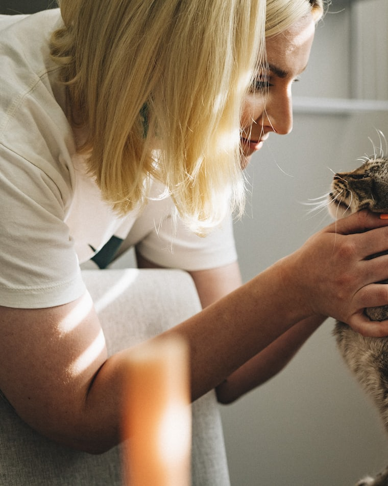
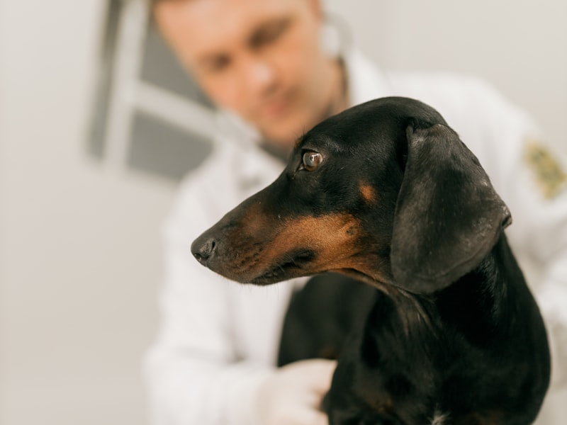
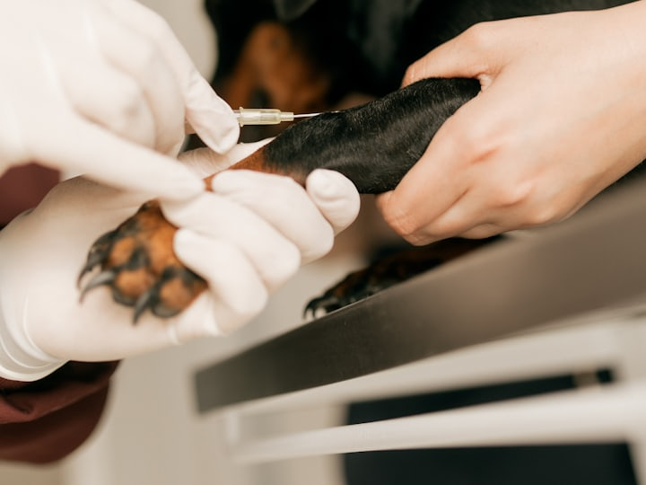
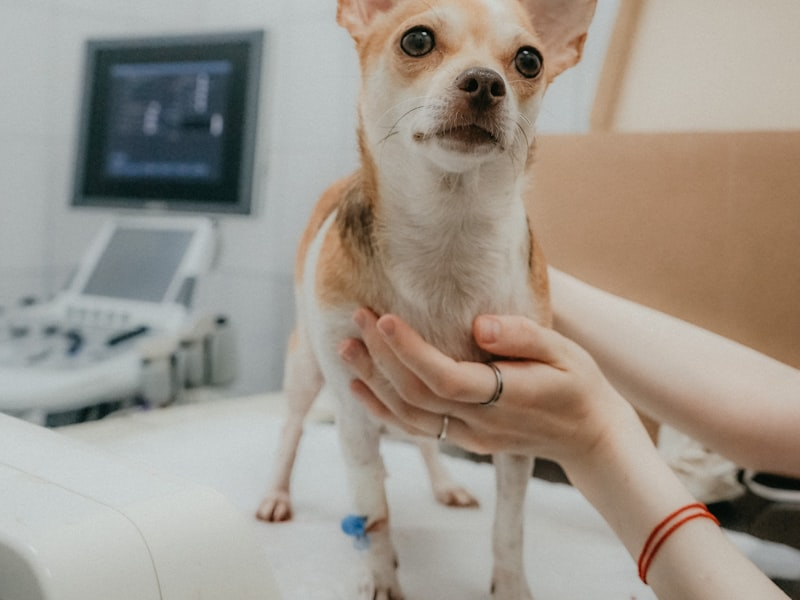
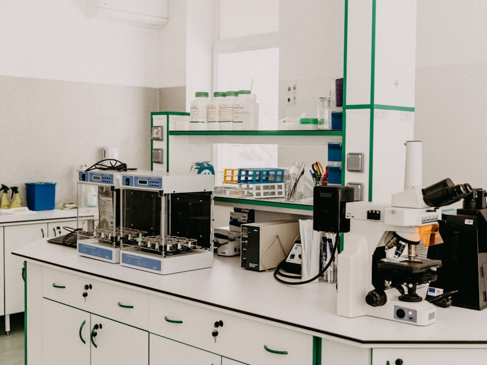
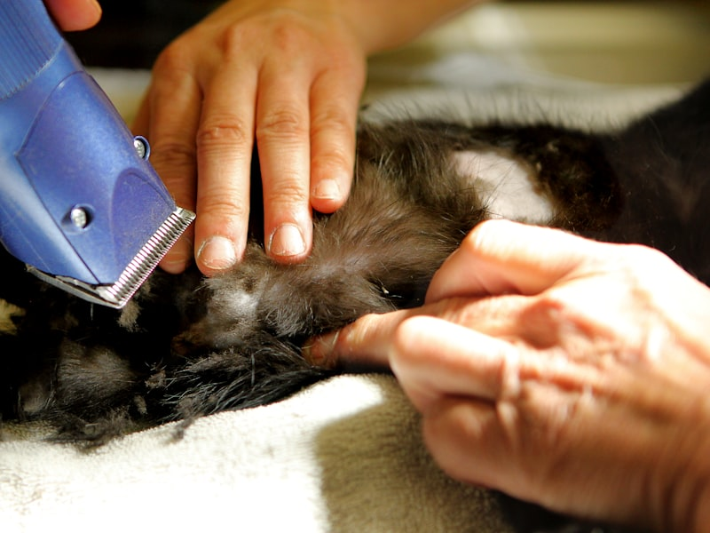

Urgencias 24 h · Madrid centro
Cuidamos de tu animal como de los nuestros.
Clínica veterinaria en el centro de Madrid. Consulta, vacunación, cirugía, diagnóstico y urgencias las 24 horas, con un equipo colegiado que te explica cada paso antes de darlo.
- Urgencias 24 h
- Equipo colegiado
- Atención a domicilio

Cómo trabajamos
-
Urgencias 24 h
Alguien descuelga el teléfono a cualquier hora, festivos incluidos, con quirófano preparado.
-
Equipo colegiado
Veterinarios colegiados en formación continua. Presupuesto por delante, siempre antes de intervenir.
-
Atención a domicilio
Vamos a tu casa cuando mover al animal es lo peor que se puede hacer por él.
Servicios
Todo lo que tu animal necesita, en un mismo sitio
De la revisión anual a la urgencia de madrugada. Mismo equipo, misma historia clínica y las mismas caras conocidas en cada visita.
-

Consulta y medicina general
Exploración completa sin prisa, orientación diagnóstica y un plan de seguimiento adaptado a la edad y la raza.
-

Vacunación y prevención
Calendario adaptado a especie, edad y estilo de vida. Desparasitación, microchip y revisiones de recuerdo.
-
Cirugía
Tejidos blandos, esterilizaciones y traumatología en quirófano propio, con monitorización anestésica continua.
-

Urgencias 24 h
Veterinario de guardia a cualquier hora del día o de la noche, con presupuesto previo antes de intervenir.
-

Diagnóstico y análisis
Analítica en la propia clínica, radiología digital y ecografía. Te enseñamos las imágenes y te contamos qué vemos.
-

Peluquería y bienestar
Baño, corte e higiene con producto específico por tipo de pelo, y manejo tranquilo para animales que lo pasan mal.
Pide cita en menos de un minuto
Elige servicio, día y hora en el asistente y te llamamos para confirmarla. Si es una urgencia, mejor llámanos directamente.